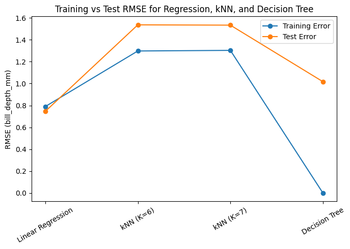

Let’s use the other variables to predict bill_depth_mm. Prepare your data and fit the following models on the entire dataset:
Your best multiple linear regression model from before (using all predictors)
Two kNN models (for different values of K)
A decision tree model
Create a plot like the right plot of Fig 1. in our Model Validation chapter with the training and test error plotted for each of your four models.
Which of your models was best?
# split data into train and tesX = penguins.drop(columns=["bill_depth_mm"])y = penguins["bill_depth_mm"]X_train, X_test, y_train, y_test = train_test_split(X, y, test_size=0.2, random_state=42)
# model 1: fit on all predictors, will later compare to the other modelslr = LinearRegression()lr.fit(X_train, y_train)
LinearRegression()
In a Jupyter environment, please rerun this cell to show the HTML representation or trust the notebook. On GitHub, the HTML representation is unable to render, please try loading this page with nbviewer.org.
LinearRegression()
# model 2: two different knn for diff values for k (maybe use grid search?)param_grid = {"n_neighbors": list(range(1, 31))}knn = KNeighborsRegressor()grid = GridSearchCV(knn, param_grid, scoring="neg_root_mean_squared_error", cv=5)grid.fit(X_train, y_train)
In a Jupyter environment, please rerun this cell to show the HTML representation or trust the notebook. On GitHub, the HTML representation is unable to render, please try loading this page with nbviewer.org.
In a Jupyter environment, please rerun this cell to show the HTML representation or trust the notebook. On GitHub, the HTML representation is unable to render, please try loading this page with nbviewer.org.
KNeighborsRegressor(n_neighbors=7)
# model 3tree = DecisionTreeRegressor(random_state=0)tree.fit(X_train, y_train)
DecisionTreeRegressor(random_state=0)
In a Jupyter environment, please rerun this cell to show the HTML representation or trust the notebook. On GitHub, the HTML representation is unable to render, please try loading this page with nbviewer.org.
decision tree is overfitting, k=7 knn is probably underfitting
plt.figure(figsize=(7,5))plt.plot(df_results["Model"], df_results["Train RMSE"], marker="o", label="Training Error")plt.plot(df_results["Model"], df_results["Test RMSE"], marker="o", label="Test Error")plt.title("Training vs Test RMSE for Regression, kNN, and Decision Tree")plt.ylabel("RMSE (bill_depth_mm)")plt.xticks(rotation=30)plt.legend()plt.tight_layout()plt.show()

The multiple linear regression model achieved the lowest test RMSE and nearly equal training error, indicating the best generalization performance. Both kNN models, with K = 6 and 7, produced higher errors, suggesting mild underfitting, while the decision tree severely overfit the training data (zero training error but much higher test error). Therefore, the linear regression model was the best overall for predicting bill_depth_mm.